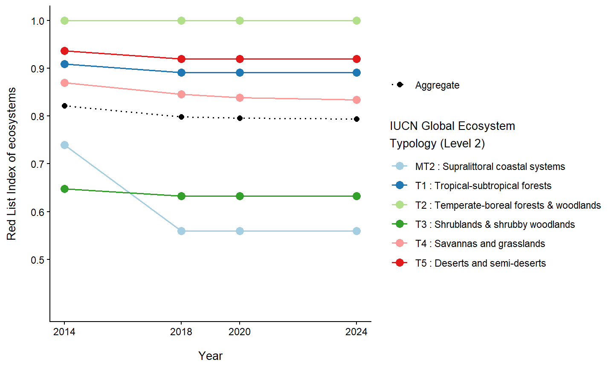
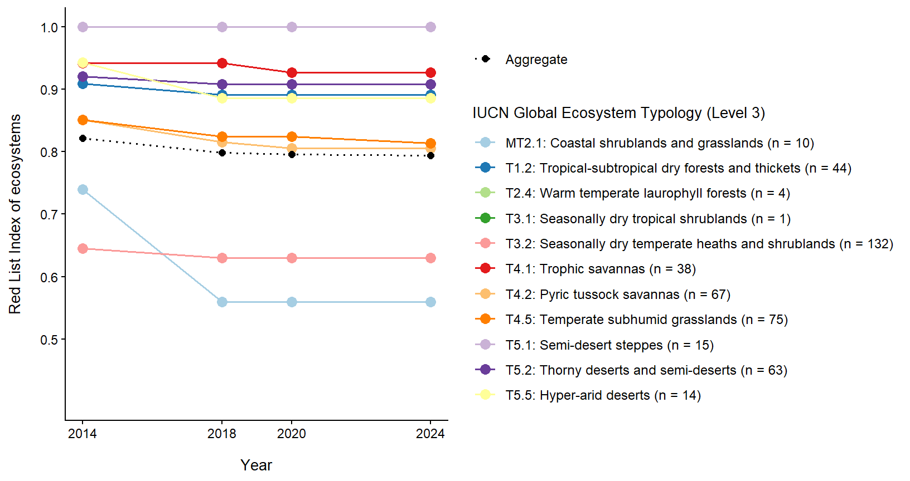

EDD <- read.csv("./data/EDDFullfile_L4L5_V4_17092025s.csv") %>%
mutate(GET_L2.text = case_when(IUCN_GET_2025_L2 == "T1" ~ "Tropical-subtropical forests",
IUCN_GET_2025_L2 == "T2" ~ "Temperate-boreal forests & woodlands",
IUCN_GET_2025_L2 == "T3" ~ "Shrublands & shrubby woodlands",
IUCN_GET_2025_L2 == "T4" ~ "Savannas and grasslands",
IUCN_GET_2025_L2 == "T5" ~ "Deserts and semi-deserts",
IUCN_GET_2025_L2 == "T6" ~ "Polar-alpine",
IUCN_GET_2025_L2 == "TF1" ~ "Palustrine wetlands",
IUCN_GET_2025_L2 == "F1" ~ "Rivers and streams",
IUCN_GET_2025_L2 == "F2" ~ "Lakes",
IUCN_GET_2025_L2 == "FM1" ~ "Semi-confined transitional waters", IUCN_GET_2025_L2 == "M1" ~ "Marine shelfs",
IUCN_GET_2025_L2 == "M3" ~ "Deep sea floors",
IUCN_GET_2025_L2 == "MFT1" ~ "Brackish tidal systems",
IUCN_GET_2025_L2 == "MT1" ~ "Shoreline systems",
IUCN_GET_2025_L2 == "MT2" ~ "Supralittoral coastal systems",
TRUE ~ "")) %>%
mutate(GET_L3.text = case_when(IUCN_GET_2022_L3 == "T1.2" ~ "Tropical-subtropical dry forests and thickets",
IUCN_GET_2022_L3 == "T2.4" ~ "Warm temperate laurophyll forests",
IUCN_GET_2022_L3 == "T3.1" ~ "Seasonally dry tropical shrublands",
IUCN_GET_2022_L3 == "T3.2" ~ "Seasonally dry temperate heaths and shrublands",
IUCN_GET_2022_L3 == "T3.3" ~ "Cool temperate heathlands",
IUCN_GET_2022_L3 == "T4.1" ~ "Trophic savannas",
IUCN_GET_2022_L3 == "T4.2" ~ "Pyric tussock savannas",
IUCN_GET_2022_L3 == "T4.5" ~ "Temperate subhumid grasslands",
IUCN_GET_2022_L3 == "T5.1" ~ "Semi-desert steppes",
IUCN_GET_2022_L3 == "T5.2" ~ "Thorny deserts and semi-deserts",
IUCN_GET_2022_L3 == "T5.5" ~ "Hyper-arid deserts",
IUCN_GET_2022_L3 == "T6.3" ~ "Polar tundra and deserts",
IUCN_GET_2022_L3 == "TF1.1" ~ "Tropical flooded forests and peat forests",
IUCN_GET_2022_L3 == "TF1.3" ~ "Permanent marshes",
IUCN_GET_2022_L3 == "TF1.4" ~ "Seasonal floodplain marshes",
IUCN_GET_2022_L3 == "TF1.5" ~ "Episodic arid floodplains",
IUCN_GET_2022_L3 == "F1.1" ~ "Permanent upland streams",
IUCN_GET_2022_L3 == "F1.2" ~ "Permanent lowland rivers",
IUCN_GET_2022_L3 == "F1.4" ~ "Seasonal upland streams",
IUCN_GET_2022_L3 == "F1.5" ~ "Seasonal lowland rivers",
IUCN_GET_2022_L3 == "F2.3" ~ "Seasonal freshwater lakes",
IUCN_GET_2022_L3 == "F2.5" ~ "Ephemeral freshwater lakes",
IUCN_GET_2022_L3 == "FM1.2" ~ "Permanently open riverine estuaries and bays",
IUCN_GET_2022_L3 == "FM1.3" ~ "Intermittently closed and open lakes and lagoons",
IUCN_GET_2022_L3 == "M1.2" ~ "Kelp forests",
IUCN_GET_2022_L3 == "M1.3" ~ "Photic coral reefs",
IUCN_GET_2022_L3 == "M1.5" ~ "Photo-limited marine animal forests",
IUCN_GET_2022_L3 == "M1.6" ~ "Subtidal rocky reefs",
IUCN_GET_2022_L3 == "M1.7" ~ "Subtidal sand beds",
IUCN_GET_2022_L3 == "M1.8" ~ "Subtidal mud plains",
IUCN_GET_2022_L3 == "M3.1" ~ "Continental and island slopes",
IUCN_GET_2022_L3 == "M3.2" ~ "Marine canyons",
IUCN_GET_2022_L3 == "M3.3" ~ "Abyssal plains",
IUCN_GET_2022_L3 == "M3.4" ~ "Seamounts, ridges and plateaus",
IUCN_GET_2022_L3 == "M3.5" ~ "Deepwater biogenic beds",
IUCN_GET_2022_L3 == "MFT1.2" ~ "Intertidal forests and shrublands",
IUCN_GET_2022_L3 == "MT1.1" ~ "Rocky shores",
IUCN_GET_2022_L3 == "MT1.3" ~ "Sandy shores",
IUCN_GET_2022_L3 == "MT1.4" ~ "Boulder and cobble shores",
IUCN_GET_2022_L3 == "MT2.1" ~ "Coastal shrublands and grasslands",
TRUE ~ "")) %>%
select(Realm_GETL1, Code, `Biome..GET.L3._Ecosystem_Fuctional_Groups..GET.Level.3.`, RLE_2025, EPL_2025, IUCN_GET_2025_L2, IUCN_GET_2022_L3, GET_L2.text, GET_L3.text, VT.Present.NVM.2024)
write.csv(EDD, "./data/EDD_GET levels names.csv")
RLE <- readxl::read_excel("./data/multiple RLE assessments.xlsx") %>%
select("MapCode",
"Year.2014",
"RLE2014.adjusted",
"Year.2018",
"RLE2018.adjusted",
"Year.2020",
"RLE2020.adjusted",
"year.2024",
"RLE 2024 adjusted")
data <- EDD %>%
filter(VT.Present.NVM.2024 %in% "TRUE",
Realm_GETL1 %in% c("Terrestrial", "Terrestrial/Freshwater"),
RLE_2025 != "#N/A") %>%
mutate(GET_L2.code_text = paste(IUCN_GET_2025_L2, GET_L2.text, sep = ": ")) %>%
mutate(GET_L3.code_text = paste(IUCN_GET_2022_L3, GET_L3.text, sep = ": ")) %>%
add_count(IUCN_GET_2022_L3, name = "n.get_L3") %>%
add_count(IUCN_GET_2025_L2, name = "n.get_L2") %>%
mutate(GET_L2.count = paste0(GET_L2.code_text, " (n = ", n.get_L2, " ecosystems)"),
GET_L3.count = paste0(GET_L3.code_text, " (n = ", n.get_L3, " ecosystems)")) %>%
left_join(RLE, by = c("Code" = "MapCode")) %>%
select(-c(GET_L2.code_text, GET_L3.code_text, n.get_L3, n.get_L2))Red List Index of ecosystems assessments
Technical workflow
Data Integration and Preparation
Here, we integrated data from the Ecosystem Description Database (EDD) with multiple Red List of Ecosystems (RLE) assessments to analyze temporal changes in ecosystem threat status. The EDD dataset was filtered to include only terrestrial ecosystems recognized in the 2024 National Vegetation Map with valid 2024/5 RLE status. We extracted ecosystem classification variables (realm, code, type, bioregion, and biome) and IUCN Global Ecosystem Typology classifications (2022 Level 3 and 2025 Level 2), then joined these with the RLE assessments from 2014, 2018, 2020, and 2024. This integration enabled temporal analysis of threat status changes over the past decade, providing a comprehensive view of ecosystem classification, current threat status, and historical trends for South African terrestrial ecosystems.
RLIe computation workflow
The Red List Index of Ecosystems (RLIe) is a headline indicator of the Kunming-Montreal Global Biodiversity Framework, designed to support monitoring progress toward ecosystem-focused goals and targets established under the Convention on Biological Diversity. The RLIe summarises the overall level of risk across a group of ecosystems, based on assessments conducted using the Red List of Ecosystems (RLE) framework.
Because the RLIe is derived from RLE assessments, ecosystem risk categories (e.g., Least Concern, Vulnerable, Endangered, Critically Endangered) are first converted into ordinal weights that reflect increasing levels of threat. These weights are then aggregated to produce a single index value ranging from 0 (all ecosystems collapsed) to 1 (all ecosystems are Least Concern), providing a summary measure of the collective status of ecosystems within a group.
To compute the Red List Index of Ecosystems (RLIe), three modular functions were developed to simplify, standardise, and extend the computation across groupings.
Function Roles:
- calcWeights() - a helper function that assigns numeric weights to IUCN Red List of Ecosystems (RLE) categories.
- bootstrap_rlie() - a statistical helper function that estimates uncertainty around the RLIe by generating bootstrap confidence intervals.
- calcRLIE() - A wrapper function that integrates weighting, index calculation, and bootstrapping, while allowing flexible grouping, e.g can calculate RLIe for the entire dataset (no groups) or by groups (functional groups & year)
Together, these functions allow RLIe to be calculated consistently for the full dataset (ungrouped) or disaggregated by one or more grouping variables (e.g. functional groups and assessment year).
Step 1: Define function to assign weights to RLE categories
The calcWeights() function takes two arguments:
- data: a data frame containing ecosystem assessment information
- RLE_criteria: the name of the column containing RLE category codes (e.g. LC, NT, VU, EN, CR, CO).
This function also removes rows with missing RLE values and assigns numeric weights (0-5) to rank risk categories, with higher values indicating greater threat.
calcWeights <- function(data, RLE_criteria) {
data <- filter(data, !is.na(data[[RLE_criteria]]))
data <- mutate(data, category_weights = dplyr::case_match(.x = .data[[RLE_criteria]],
"CO" ~ 5,
"CR" ~ 4,
"EN" ~ 3,
"VU" ~ 2,
"NT" ~ 1,
"LC" ~ 0,
.default = NA_real_))
return(data)
}Step 2: Define bootstrap function for confidence intervals
The Red List Index of Ecosystems (RLIe) is often calculated using a relatively small and uneven number of ecosystem types within a given ecosystem classification level. This is the case for the terrestrial Red List of Ecosystems (RLE) data, where RLIe values were calculated for ecosystems aggregated at the IUCN Global Ecosystem Typology (GET) Level 2 (Biomes) and Level 3 (Ecosystem Functional Groups). At both levels, groups differ in the number of ecosystem types assessed and in their composition of threat categories. As a result, the RLIe values are subject to uncertainty, and small changes in the set of assessed ecosystems can lead to noticeable changes in index scores.
To quantify this uncertainty, a non-parametric bootstrap resampling approach was applied. Within each GET group, ecosystem types were repeatedly resampled with replacement, maintaining the original group size, and the RLIe was recalculated for each resample. Repeating this procedure n times produced a distribution of plausible RLIe values for each group. The 2.5th and 97.5th percentiles of this distribution were used to derive 95% confidence intervals around the RLIe estimates. Narrow confidence intervals indicate relatively stable index values, while wider intervals indicate greater uncertainty.
The bootstrap_rlie() function:
- Takes a vector of category weights (0–5)
- Randomly resamples the weights with replacement
- Recalculates the RLIe score for each resample
- Repeats this process 5,000 times
- Extracts the 2.5th and 97.5th percentiles of the bootstrap distribution
These percentiles define a 95% confidence interval around the RLIe estimate, representing the range within which the true index value is likely to lie.
Calculation of the index
The ordinal ranks are used to calculate the Red List Index for Ecosystems (RLIe) and the RLIe ranges from zero (all ecosystems Collapsed) to one (all Least Concern).
\[ RLIE_t = 1- \frac{\sum_{i = 1}^{n} W_{C_{i,j}}}{W_{{CO}^n}} \]
Where \(W_{C_{i,j}}\) represents the risk category rank for ecosystem \(i\) in year \(t\), with the following values:
- Collapsed = 5
- Critically Endangered = 4
- Endangered = 3
- Vulnerable = 2
- Near Threatened = 1
- Least Concern = 0
bootstrap_rlie <- function(weights, n_boot = 5000) { # vector of ecosystem weights (0-5) & bootstrap iterations (default= 1000)
boot_scores <- replicate(n_boot, {
sampled <- sample(weights, size = length(weights), replace = TRUE) # randomly picks weights with replacement
1 - (sum(sampled, na.rm = TRUE) / (length(sampled) * 5)) # calculates the RLIe score
})
quantile(boot_scores, probs = c(0.025, 0.975), na.rm = TRUE)
}Step 3: Define main RLIe calculation function
The calcRLIE() function calculates the Red List Index of Ecosystems (RLIe) for a dataset, either at the national level or grouped by one or more categorical variables (e.g., GET Level, year). It integrates two helper functions:
- calcWeights() – converts RLE categories (LC → CO) into numeric weights (0–5)
- bootstrap_rlie() – performs non-parametric bootstrap resampling to generate confidence intervals
The function starts off by cleaning the data - removing unevaluated ecosystems, converts risk categories into numeric weights, and calculates RLIe scores either for the entire dataset or by groups (like GET levels and year). To account for uncertainty, it performs 5,000 bootstrap simulations to generate 95% confidence intervals around each score. The output is a table showing RLIe values with their confidence bounds.
calcRLIE <- function(data, RLE_criteria, group1 = NULL, group2 = NULL, n_boot = 5000) {
# ---- DATA CLEANING ----
# Remove ecosystems that are Not Evaluated (NE) or Data Deficient (DD)
data <- dplyr::filter(data, !.data[[RLE_criteria]] %in% c("NE", "DD"))
# ---- WEIGHT ASSIGNMENT ----
# Call calcWeights() to convert RLE categories into numeric weights & drop NA rows
data <- calcWeights(data, RLE_criteria)
data <- tidyr::drop_na(data, category_weights)
# ---- HANDLE MISSING VALUES IN GROUPING VARIABLES ----
# Drops rows with missing grouping variables (if provided) to ensure all groups are complete
if (!is.null(group1)) {
data <- tidyr::drop_na(data, !!rlang::sym(group1))
}
if (!is.null(group2)) {
data <- tidyr::drop_na(data, !!rlang::sym(group2))
}
# ---- GROUP THE DATA ----
# If one or two grouping variables are supplied, data is grouped accordingly.
# If no grouping variables are provided, a dummy group "all" is created so the workflow still works uniformly.
grouped <- if (!is.null(group1) && !is.null(group2)) {
dplyr::group_by(data, group1 = .data[[group1]], group2 = .data[[group2]])
} else if (!is.null(group1)) {
dplyr::group_by(data, group1 = .data[[group1]])
} else if (!is.null(group2)) {
dplyr::group_by(data, group2 = .data[[group2]])
} else {
dplyr::mutate(data, dummy_group = "all") %>% dplyr::group_by(dummy_group)
}
# ---- CALCULATE RLIE SCORES ----
result <- summarise(grouped,
total_weight = sum(category_weights, na.rm = TRUE),
total_count = dplyr::n(),
RLIE = 1 - (total_weight / (total_count * 5)),
weights_list = list(category_weights), .groups = "drop") #store the individual weights as a list for bootstrap calculations
# ---- BOOTSTRAP CONFIDENCE INTERVALS ----
# purrr::map() applies bootstrap_rlie() to each group's ecosystem weights in weights_list.
# For each group, bootstrap_rlie() takes the weights (.x), resamples them with replacement,
# recalculates the RLIe for each resample, and returns the 95% CI.
bounds <- purrr::map(result$weights_list, ~ bootstrap_rlie(.x, n_boot = n_boot))
bounds_df <- do.call(rbind, bounds)
# Add lower an and upper confidence bounds
result$lower <- bounds_df[, 1]
result$upper <- bounds_df[, 2]
# ---- FINAL CLEANUP ----
# Add a column showing which RLE criteria column was analyzed
# Remove the weights_list column (no longer needed, keeps output clean)
result$criteria <- RLE_criteria
result$weights_list <- NULL
return(result)
}Step 4: Reshape data from wide to long format
This code reshapes the ecosystem data from wide to long format, converting it from one row per ecosystem (with separate columns for each year’s assessment) to four rows per ecosystem (one per year). It consolidates all year-specific RLE assessments into a single Overall column, simplifies long column names, keeps only essential columns, and filters out missing data.
combined_data <- data %>%
pivot_longer(cols = c(Year.2014, Year.2018, Year.2020, year.2024),
names_to = "Year_col",
values_to = "Year") %>%
mutate(Year = as.numeric(Year),
Overall = case_when(Year == 2014 ~ RLE2014.adjusted,
Year == 2018 ~ RLE2018.adjusted,
Year == 2020 ~ RLE2020.adjusted,
Year == 2024 ~ `RLE 2024 adjusted`, TRUE ~ NA_character_),
Fuctional_Groups = `Biome..GET.L3._Ecosystem_Fuctional_Groups..GET.Level.3.`,
GET_L2 = `GET_L2.count`,
GET_L3 = `GET_L3.count`) %>%
select(Realm_GETL1, Code, Fuctional_Groups, GET_L2.count, GET_L3.count, Year, Overall) %>%
filter(!is.na(Year), !is.na(Overall))Step 5: Calculate RLIe by GET and Year, national RLIe by Year
calculates the Red List Index of Ecosystems (RLIe) using bootstrap confidence intervals (n = 5000) for:
- GET Level 2 ecosystems by year
- GET Level 3 ecosystems by year
- national‐level aggregate by year, and then combines all results into a single dataset for consistent reporting and comparison.
#--------- RLIe Calculation: GET Level 3 by Year ---------
RLIe_GET_L3 <- calcRLIE(combined_data,
RLE_criteria = "Overall",
group1 = "GET_L3.count",
group2 = "Year",
n_boot = 5000) %>%
rename(GET = group1,
Year = group2) %>%
mutate(Analysis_Level = "GET_L3.count")
#--------- RLIe Calculation: GET Level 2 by Year ---------
RLIe_GET_L2 <- calcRLIE(combined_data,
RLE_criteria = "Overall",
group1 = "GET_L2.count",
group2 = "Year",
n_boot = 5000) %>%
rename(GET = group1,
Year = group2) %>%
mutate(Analysis_Level = "GET_L2.count")
#--------- Calculate RLIe: national ---------
RLIe_national <- calcRLIE(combined_data,
RLE_criteria = "Overall",
group2 = "Year",
n_boot = 5000) %>%
rename(Year = group2) %>%
mutate(Analysis_Level = "Aggregate") # placeholder for uniform binding
#--------- Combine results ---------
RLIe_all <- bind_rows(RLIe_GET_L2, RLIe_GET_L3, RLIe_national)
writexl::write_xlsx(RLIe_all, "./data/RLIe_scores.xlsx")| GET | Year | Total weight | Total count | RLIe | Lower bound | Upper bound | Criteria | Analysis level |
|---|---|---|---|---|---|---|---|---|
| MT2: Supralittoral coastal systems (n = 10 ecosystems) | 2014 | 13 | 10 | 0.7400000 | 0.5400000 | 0.9400000 | Overall | GET_L2.count |
| MT2: Supralittoral coastal systems (n = 10 ecosystems) | 2018 | 22 | 10 | 0.5600000 | 0.3400000 | 0.7800000 | Overall | GET_L2.count |
| MT2: Supralittoral coastal systems (n = 10 ecosystems) | 2020 | 22 | 10 | 0.5600000 | 0.3400000 | 0.7800000 | Overall | GET_L2.count |
| MT2: Supralittoral coastal systems (n = 10 ecosystems) | 2024 | 22 | 10 | 0.5600000 | 0.3400000 | 0.7800000 | Overall | GET_L2.count |
| T1: Tropical-subtropical forests (n = 44 ecosystems) | 2014 | 20 | 44 | 0.9090909 | 0.8363636 | 0.9727273 | Overall | GET_L2.count |
| T1: Tropical-subtropical forests (n = 44 ecosystems) | 2018 | 24 | 44 | 0.8909091 | 0.8090909 | 0.9636364 | Overall | GET_L2.count |
| T1: Tropical-subtropical forests (n = 44 ecosystems) | 2020 | 24 | 44 | 0.8909091 | 0.8090909 | 0.9636364 | Overall | GET_L2.count |
| T1: Tropical-subtropical forests (n = 44 ecosystems) | 2024 | 24 | 44 | 0.8909091 | 0.8090909 | 0.9636364 | Overall | GET_L2.count |
| T2: Temperate-boreal forests & woodlands (n = 4 ecosystems) | 2014 | 0 | 4 | 1.0000000 | 1.0000000 | 1.0000000 | Overall | GET_L2.count |
| T2: Temperate-boreal forests & woodlands (n = 4 ecosystems) | 2018 | 0 | 4 | 1.0000000 | 1.0000000 | 1.0000000 | Overall | GET_L2.count |
| T2: Temperate-boreal forests & woodlands (n = 4 ecosystems) | 2020 | 0 | 4 | 1.0000000 | 1.0000000 | 1.0000000 | Overall | GET_L2.count |
| T2: Temperate-boreal forests & woodlands (n = 4 ecosystems) | 2024 | 0 | 4 | 1.0000000 | 1.0000000 | 1.0000000 | Overall | GET_L2.count |
| T3: Shrublands & shrubby woodlands (n = 133 ecosystems) | 2014 | 234 | 133 | 0.6481203 | 0.5879699 | 0.7097744 | Overall | GET_L2.count |
| T3: Shrublands & shrubby woodlands (n = 133 ecosystems) | 2018 | 244 | 133 | 0.6330827 | 0.5729323 | 0.6947368 | Overall | GET_L2.count |
| T3: Shrublands & shrubby woodlands (n = 133 ecosystems) | 2020 | 244 | 133 | 0.6330827 | 0.5684211 | 0.6962406 | Overall | GET_L2.count |
| T3: Shrublands & shrubby woodlands (n = 133 ecosystems) | 2024 | 244 | 133 | 0.6330827 | 0.5699248 | 0.6962406 | Overall | GET_L2.count |
| T4: Savannas and grasslands (n = 180 ecosystems) | 2014 | 117 | 180 | 0.8700000 | 0.8322222 | 0.9055556 | Overall | GET_L2.count |
| T4: Savannas and grasslands (n = 180 ecosystems) | 2018 | 139 | 180 | 0.8455556 | 0.8044444 | 0.8833333 | Overall | GET_L2.count |
| T4: Savannas and grasslands (n = 180 ecosystems) | 2020 | 145 | 180 | 0.8388889 | 0.7988889 | 0.8778056 | Overall | GET_L2.count |
| T4: Savannas and grasslands (n = 180 ecosystems) | 2024 | 149 | 180 | 0.8344444 | 0.7944444 | 0.8733611 | Overall | GET_L2.count |
| T5: Deserts and semi-deserts (n = 92 ecosystems) | 2014 | 29 | 92 | 0.9369565 | 0.8934239 | 0.9760870 | Overall | GET_L2.count |
| T5: Deserts and semi-deserts (n = 92 ecosystems) | 2018 | 37 | 92 | 0.9195652 | 0.8695652 | 0.9630435 | Overall | GET_L2.count |
| T5: Deserts and semi-deserts (n = 92 ecosystems) | 2020 | 37 | 92 | 0.9195652 | 0.8673913 | 0.9630435 | Overall | GET_L2.count |
| T5: Deserts and semi-deserts (n = 92 ecosystems) | 2024 | 37 | 92 | 0.9195652 | 0.8716848 | 0.9652174 | Overall | GET_L2.count |
| MT2.1: Coastal shrublands and grasslands (n = 10 ecosystems) | 2014 | 13 | 10 | 0.7400000 | 0.5400000 | 0.9400000 | Overall | GET_L3.count |
| MT2.1: Coastal shrublands and grasslands (n = 10 ecosystems) | 2018 | 22 | 10 | 0.5600000 | 0.3400000 | 0.7800000 | Overall | GET_L3.count |
| MT2.1: Coastal shrublands and grasslands (n = 10 ecosystems) | 2020 | 22 | 10 | 0.5600000 | 0.3400000 | 0.7800000 | Overall | GET_L3.count |
| MT2.1: Coastal shrublands and grasslands (n = 10 ecosystems) | 2024 | 22 | 10 | 0.5600000 | 0.3400000 | 0.7800000 | Overall | GET_L3.count |
| T1.2: Tropical-subtropical dry forests and thickets (n = 44 ecosystems) | 2014 | 20 | 44 | 0.9090909 | 0.8363636 | 0.9727273 | Overall | GET_L3.count |
| T1.2: Tropical-subtropical dry forests and thickets (n = 44 ecosystems) | 2018 | 24 | 44 | 0.8909091 | 0.8090909 | 0.9636364 | Overall | GET_L3.count |
| T1.2: Tropical-subtropical dry forests and thickets (n = 44 ecosystems) | 2020 | 24 | 44 | 0.8909091 | 0.8090909 | 0.9636364 | Overall | GET_L3.count |
| T1.2: Tropical-subtropical dry forests and thickets (n = 44 ecosystems) | 2024 | 24 | 44 | 0.8909091 | 0.8090909 | 0.9636364 | Overall | GET_L3.count |
| T2.4: Warm temperate laurophyll forests (n = 4 ecosystems) | 2014 | 0 | 4 | 1.0000000 | 1.0000000 | 1.0000000 | Overall | GET_L3.count |
| T2.4: Warm temperate laurophyll forests (n = 4 ecosystems) | 2018 | 0 | 4 | 1.0000000 | 1.0000000 | 1.0000000 | Overall | GET_L3.count |
| T2.4: Warm temperate laurophyll forests (n = 4 ecosystems) | 2020 | 0 | 4 | 1.0000000 | 1.0000000 | 1.0000000 | Overall | GET_L3.count |
| T2.4: Warm temperate laurophyll forests (n = 4 ecosystems) | 2024 | 0 | 4 | 1.0000000 | 1.0000000 | 1.0000000 | Overall | GET_L3.count |
| T3.1: Seasonally dry tropical shrublands (n = 1 ecosystems) | 2014 | 0 | 1 | 1.0000000 | 1.0000000 | 1.0000000 | Overall | GET_L3.count |
| T3.1: Seasonally dry tropical shrublands (n = 1 ecosystems) | 2018 | 0 | 1 | 1.0000000 | 1.0000000 | 1.0000000 | Overall | GET_L3.count |
| T3.1: Seasonally dry tropical shrublands (n = 1 ecosystems) | 2020 | 0 | 1 | 1.0000000 | 1.0000000 | 1.0000000 | Overall | GET_L3.count |
| T3.1: Seasonally dry tropical shrublands (n = 1 ecosystems) | 2024 | 0 | 1 | 1.0000000 | 1.0000000 | 1.0000000 | Overall | GET_L3.count |
| T3.2: Seasonally dry temperate heaths and shrublands (n = 132 ecosystems) | 2014 | 234 | 132 | 0.6454545 | 0.5848485 | 0.7060606 | Overall | GET_L3.count |
| T3.2: Seasonally dry temperate heaths and shrublands (n = 132 ecosystems) | 2018 | 244 | 132 | 0.6303030 | 0.5712121 | 0.6939394 | Overall | GET_L3.count |
| T3.2: Seasonally dry temperate heaths and shrublands (n = 132 ecosystems) | 2020 | 244 | 132 | 0.6303030 | 0.5666667 | 0.6909091 | Overall | GET_L3.count |
| T3.2: Seasonally dry temperate heaths and shrublands (n = 132 ecosystems) | 2024 | 244 | 132 | 0.6303030 | 0.5681818 | 0.6909091 | Overall | GET_L3.count |
| T4.1: Trophic savannas (n = 38 ecosystems) | 2014 | 11 | 38 | 0.9421053 | 0.8842105 | 0.9894737 | Overall | GET_L3.count |
| T4.1: Trophic savannas (n = 38 ecosystems) | 2018 | 11 | 38 | 0.9421053 | 0.8840789 | 0.9894737 | Overall | GET_L3.count |
| T4.1: Trophic savannas (n = 38 ecosystems) | 2020 | 14 | 38 | 0.9263158 | 0.8631579 | 0.9842105 | Overall | GET_L3.count |
| T4.1: Trophic savannas (n = 38 ecosystems) | 2024 | 14 | 38 | 0.9263158 | 0.8578947 | 0.9842105 | Overall | GET_L3.count |
| T4.2: Pyric tussock savannas (n = 67 ecosystems) | 2014 | 50 | 67 | 0.8507463 | 0.7850746 | 0.9134328 | Overall | GET_L3.count |
| T4.2: Pyric tussock savannas (n = 67 ecosystems) | 2018 | 62 | 67 | 0.8149254 | 0.7432836 | 0.8805970 | Overall | GET_L3.count |
| T4.2: Pyric tussock savannas (n = 67 ecosystems) | 2020 | 65 | 67 | 0.8059701 | 0.7313433 | 0.8746269 | Overall | GET_L3.count |
| T4.2: Pyric tussock savannas (n = 67 ecosystems) | 2024 | 65 | 67 | 0.8059701 | 0.7343284 | 0.8746269 | Overall | GET_L3.count |
| T4.5: Temperate subhumid grasslands (n = 75 ecosystems) | 2014 | 56 | 75 | 0.8506667 | 0.7893333 | 0.9040000 | Overall | GET_L3.count |
| T4.5: Temperate subhumid grasslands (n = 75 ecosystems) | 2018 | 66 | 75 | 0.8240000 | 0.7600000 | 0.8826667 | Overall | GET_L3.count |
| T4.5: Temperate subhumid grasslands (n = 75 ecosystems) | 2020 | 66 | 75 | 0.8240000 | 0.7573333 | 0.8826667 | Overall | GET_L3.count |
| T4.5: Temperate subhumid grasslands (n = 75 ecosystems) | 2024 | 70 | 75 | 0.8133333 | 0.7493333 | 0.8746667 | Overall | GET_L3.count |
| T5.1: Semi-desert steppes (n = 15 ecosystems) | 2014 | 0 | 15 | 1.0000000 | 1.0000000 | 1.0000000 | Overall | GET_L3.count |
| T5.1: Semi-desert steppes (n = 15 ecosystems) | 2018 | 0 | 15 | 1.0000000 | 1.0000000 | 1.0000000 | Overall | GET_L3.count |
| T5.1: Semi-desert steppes (n = 15 ecosystems) | 2020 | 0 | 15 | 1.0000000 | 1.0000000 | 1.0000000 | Overall | GET_L3.count |
| T5.1: Semi-desert steppes (n = 15 ecosystems) | 2024 | 0 | 15 | 1.0000000 | 1.0000000 | 1.0000000 | Overall | GET_L3.count |
| T5.2: Thorny deserts and semi-deserts (n = 63 ecosystems) | 2014 | 25 | 63 | 0.9206349 | 0.8603175 | 0.9714286 | Overall | GET_L3.count |
| T5.2: Thorny deserts and semi-deserts (n = 63 ecosystems) | 2018 | 29 | 63 | 0.9079365 | 0.8444444 | 0.9650794 | Overall | GET_L3.count |
| T5.2: Thorny deserts and semi-deserts (n = 63 ecosystems) | 2020 | 29 | 63 | 0.9079365 | 0.8444444 | 0.9650794 | Overall | GET_L3.count |
| T5.2: Thorny deserts and semi-deserts (n = 63 ecosystems) | 2024 | 29 | 63 | 0.9079365 | 0.8444444 | 0.9650794 | Overall | GET_L3.count |
| T5.5: Hyper-arid deserts (n = 14 ecosystems) | 2014 | 4 | 14 | 0.9428571 | 0.8285714 | 1.0000000 | Overall | GET_L3.count |
| T5.5: Hyper-arid deserts (n = 14 ecosystems) | 2018 | 8 | 14 | 0.8857143 | 0.7142857 | 1.0000000 | Overall | GET_L3.count |
| T5.5: Hyper-arid deserts (n = 14 ecosystems) | 2020 | 8 | 14 | 0.8857143 | 0.7142857 | 1.0000000 | Overall | GET_L3.count |
| T5.5: Hyper-arid deserts (n = 14 ecosystems) | 2024 | 8 | 14 | 0.8857143 | 0.7142857 | 1.0000000 | Overall | GET_L3.count |
| NA | 2014 | 413 | 463 | 0.8215983 | 0.7943844 | 0.8479482 | Overall | Aggregate |
| NA | 2018 | 466 | 463 | 0.7987041 | 0.7693305 | 0.8263607 | Overall | Aggregate |
| NA | 2020 | 472 | 463 | 0.7961123 | 0.7667387 | 0.8254968 | Overall | Aggregate |
| NA | 2024 | 476 | 463 | 0.7943844 | 0.7654428 | 0.8237581 | Overall | Aggregate |

